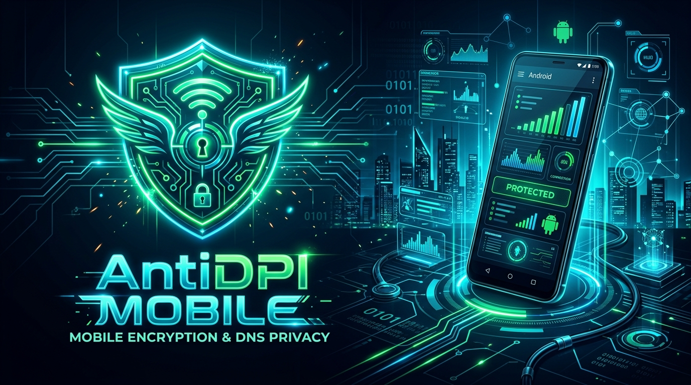

Sıfır Hız Kaybı.
Sıfır Ping Artışı.
Özgür İnternet.
AntiDPI Mobile bir VPN değildir. Uzak sunucularla bağlantınızı yavaşlatmaz. Cihazınızda çalışan yerel DPI manipülasyon çekirdeği ile Discord, Roblox ve tüm sansürlü siteleri orijinal internet hızınızla açar.

Sıradan VPN'ler vs AntiDPI Mobile
Neden uzak sunuculu hantal VPN'ler yerine cihaz içi yerel DPI atlatma kullanmalısınız?
| Kriter | Sıradan VPN (Nord, Proton vb.) | AntiDPI Mobile |
|---|---|---|
| İnternet Hızı | %50 - %80 Düşüş (Hızınız kısıtlanır) | Sıfır Hız Kaybı (100 Mbps aynen kalır) |
| Oyunlarda Ping & Gecikme | +100ms - 250ms (Oyun oynatmaz) | 0ms Artış (Doğrudan ISP pinginiz) |
| Veri Gizliliği | Tüm trafiğiniz yabancı şirketin sunucusundan geçer | Trafik 100% cihazda kalır, sunucu yoktur |
| Fiyat & Üyelik | Aylık yüksek döviz ücretleri veya reklamlar | %100 Ücretsiz & Reklamsız & Sınırsız |
| Engellenme Riski | VPN sunucu IP'leri BTK tarafından kolayca bloklanır | Sunucusuz çalıştığı için IP bloğu uygulanamaz |
Gelişmiş Ağ & Sansür Atlatma Özellikleri
Ciadpi (ByeDPI) C Çekirdeği
Android NDK ile C dilinde derlenmiş resmi ByeDPI motoru; TLS SNI paketlerini bayt seviyesinde parçalar, sırasız gönderir (disorder) ve DPI durum makinelerini aldatır.
Türkiye Operatör Optimizasyonu
Türk Telekom, Turkcell, Vodafone ve Superonline DPI donanımlarının paket filtreleme modelleri incelenerek her biri için özel ayarlar oluşturuldu.
Dahili OTA Kendi Kendine Güncelleme
Play Store olmadan da yeni güncellemeler çıktığında uygulama sizi uyarır ve tek dokunuşla son sürüme sorunsuz şekilde yükseltir.
Şifreli DNS (DoH) Entegrasyonu
Cloudflare (1.1.1.1), Google (8.8.8.8) ve Quad9 DNS-over-HTTPS istemcisi ile ISS düzeyindeki DNS zehirlemeleri ve sahte IP yönlendirmeleri tarihe karışır.
Banka & Uygulama Ayırıcı (Bypass)
Banka uygulamaları, e-Devlet veya oyunları tünelden hariç tutarak yerel ağ üzerinden kesintisiz ve doğrudan çalışmasını sağlayabilirsiniz.
Uzaktan Dinamik Kural Yönetimi
Operatörler yeni bir sansür algoritması getirse bile GitHub üzerinden yayınlanan dinamik kurallarla uygulama yeniden derlenmeden anında güncellenir.
Tüm Türkiye Ev ve Mobil İnternet Sağlayıcılarında Test Edildi
Sıkça Sorulan Sorular
AntiDPI Mobile bir VPN mi? İnternetimi yavaşlatır mı?
Hayır! Sıradan VPN'ler trafiğinizi Almanya, Amerika gibi uzak sunuculara yönlendirdiği için internet hızınızı %80 düşürür ve pinginizi uçurur. AntiDPI Mobile ise cihaz içinde yerel bir döngü kurar; paket başlıklarını DPI sansür filtrelerinin tanıyamayacağı şekilde manipüle edip doğrudan hedefe gönderir. Hızınız ve pinginiz %100 orijinal kalır.
Discord, Roblox veya Instagram gibi platformlarda çalışır mı?
Evet. Türkiye'de uygulanan DPI tabanlı SNI engellemelerinin tamamını atlatmak üzere tasarlanmıştır. Discord ses kanalları, Roblox sunucuları ve tüm engelli web sitelerine kesintisiz erişebilirsiniz.
Banka veya e-Devlet işlemlerimde güvenlik sorunu olur mu?
Uygulama hiçbir verinizi kaydetmez veya uzak bir yere aktarmaz. Ancak bankaların olağan dışı ağ kontrollerine takılmamak isterseniz uygulama içindeki "Uygulamalar" ekranından bankalarınızı tek tıkla bypass (hariç tutulanlar) listesine alabilirsiniz.
Pil tüketimi veya arka planda kapanma sorunu yaşar mıyım?
Uygulamanın çekirdeği saf C dili ve lwIP mikro yığını ile yazıldığı için minimum CPU ve RAM harcar. Android'in pil optimizasyonundan muaf tutulduğunda arka planda asla kapanmadan gün boyu sorunsuz çalışır.
Uygulamayı nasıl kurar ve güncellerim?
İndirdiğiniz APK dosyasına dokunup "Bilinmeyen kaynaklara izin ver" diyerek tek tıkla kurabilirsiniz. İleride yeni bir sürüm çıktığında uygulama açılışında otomatik bildirim alacak ve tek dokunuşla güncelleyebileceksiniz.